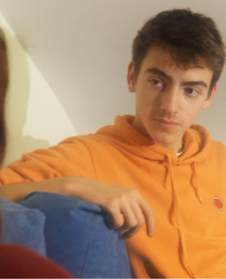
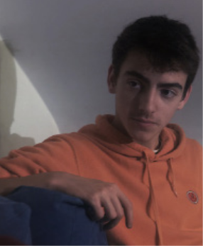
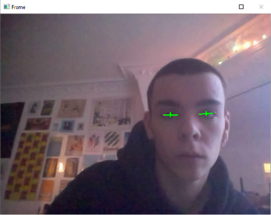
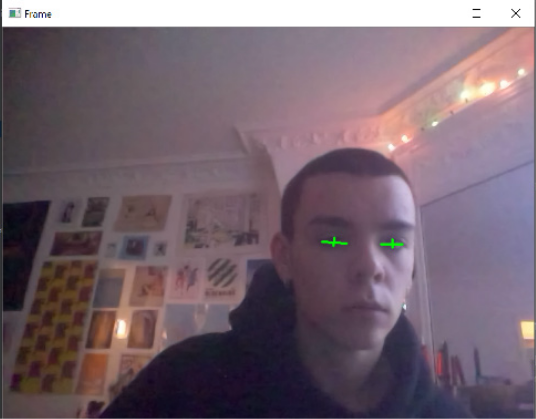

SYNOPSIS
NOTE D’INTENTION
INTENTION TECHNIQUE
Fin de soirées chez Alice, elle reste à échanger avec son ami Noah.
Elle semble torturée, Noah décide alors de la questionner pour en
savoir plus, la discutions va prendre une tournure de plus en plus
étrange …
Elle semble torturée, Noah décide alors de la questionner pour en
savoir plus, la discutions va prendre une tournure de plus en plus
étrange …
La thématique du rêve et de la démence m’intéresse particulièrement.
A la manière de Descartes dans ses et Méditations métaphysiques ; J’ai conscience d’être dans le réel car je sens mes doigts taper sur le clavier, l’odeur et la lumière qui caractérise mon salon. Sans trop me poser de question, si on me demandait si ce que je vis est réel je répondrais oui, que mes sens m’en informent.
Je suis dans la réalité. Seulement ; Dans mes songes passés, ses sens que je prends pour arguments de réalité ne m’ont-ils pas déjà trompé ? Sentir le corps chaud d’un être aimé, entendre des cris, démarrer une discussion, Voir de magnifiques paysages ou de revivre une situation banale. Ressentir la douleur, la fatigue, l’émoi. Alors qu’il ne s’agit que de rêve quelle doit être la perception du monde d’une personne pour qui la démence est quotidienne ?
Je veux faire douter le spectateur de la réalité de l’instant qu’il va vivre en regardant le court métrage. Le faire douter de ses sens (vu et ouïe) et même de sa comprenions générale. Qu’il se connecte à l’instant et se questionne sur la réalité de celui-ci. Cela l’impliquer dans cette sensation.
A la manière de Descartes dans ses et Méditations métaphysiques ; J’ai conscience d’être dans le réel car je sens mes doigts taper sur le clavier, l’odeur et la lumière qui caractérise mon salon. Sans trop me poser de question, si on me demandait si ce que je vis est réel je répondrais oui, que mes sens m’en informent.
Je suis dans la réalité. Seulement ; Dans mes songes passés, ses sens que je prends pour arguments de réalité ne m’ont-ils pas déjà trompé ? Sentir le corps chaud d’un être aimé, entendre des cris, démarrer une discussion, Voir de magnifiques paysages ou de revivre une situation banale. Ressentir la douleur, la fatigue, l’émoi. Alors qu’il ne s’agit que de rêve quelle doit être la perception du monde d’une personne pour qui la démence est quotidienne ?
Je veux faire douter le spectateur de la réalité de l’instant qu’il va vivre en regardant le court métrage. Le faire douter de ses sens (vu et ouïe) et même de sa comprenions générale. Qu’il se connecte à l’instant et se questionne sur la réalité de celui-ci. Cela l’impliquer dans cette sensation.
Le logiciel est coder grâce à 3 bibliothèque python
Open CV: pour le tracking en temps réel et la capture des clignements
Moviepy : pour afficher les vidéos
Pygame: pour créer la fenêtre générale et transformer les variables
de clignements d’œil.
Open CV: pour le tracking en temps réel et la capture des clignements
Moviepy : pour afficher les vidéos
Pygame: pour créer la fenêtre générale et transformer les variables
de clignements d’œil.
Il est donc question d'un logiciel récupérant le clignement de yeux des spectateurs pour modifier l'image en direct se qui sert aux propos du film.
Chaque plan et séquence (Vidéo) sera travaillé de deux manières
différentes.
Calque vidéo 1, calque vidéo 2 Les deux calques vidéo seront
identiques avec une colorimétrie différente
Lors du visionnage
le petit logiciel en python, récupère les clignements de yeux du
spectateur il ajoute 1 dans un compteur (eyes_blinking_compteurs) à
chaque clignement.
Quand eyes_blinking_compteurs > 1 le film se lance.
différentes.
Calque vidéo 1, calque vidéo 2 Les deux calques vidéo seront
identiques avec une colorimétrie différente
Lors du visionnage
le petit logiciel en python, récupère les clignements de yeux du
spectateur il ajoute 1 dans un compteur (eyes_blinking_compteurs) à
chaque clignement.
Quand eyes_blinking_compteurs > 1 le film se lance.
CHEZ ALICE




BIOGRAPHIE